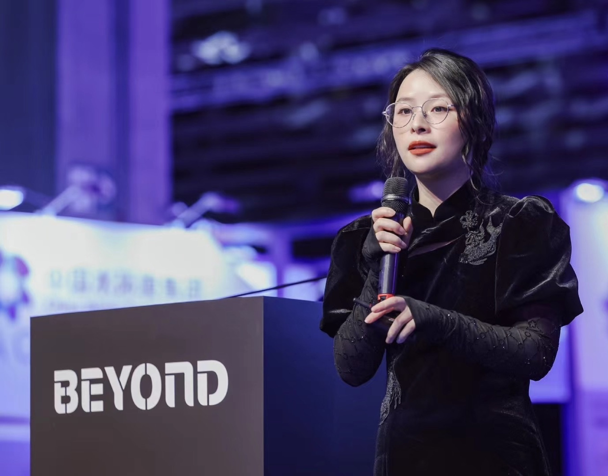
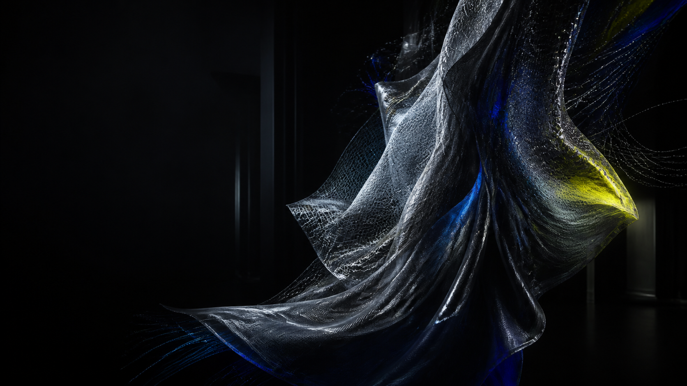
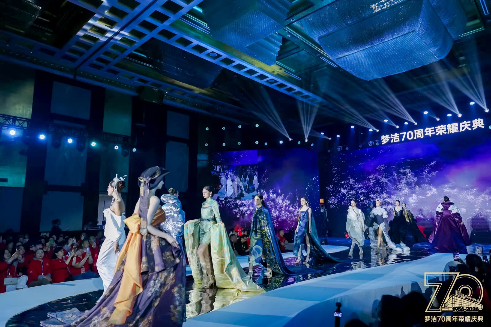
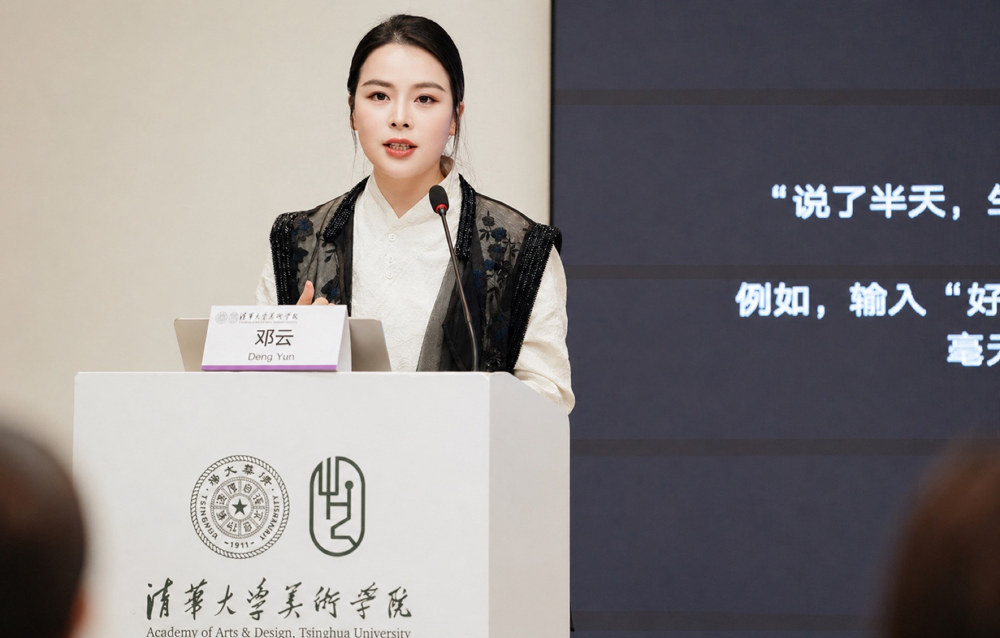
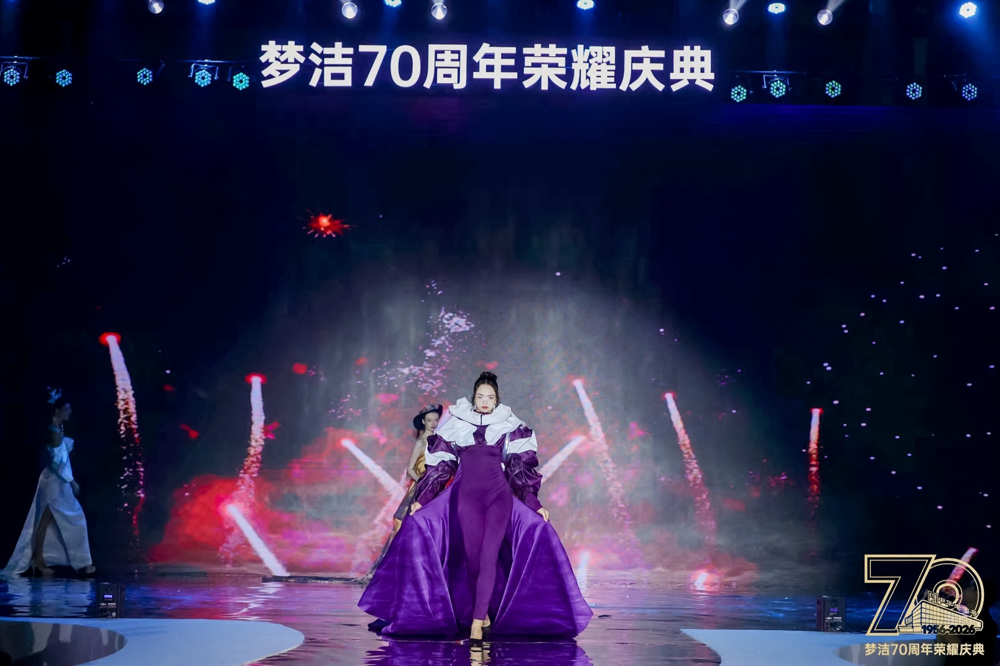
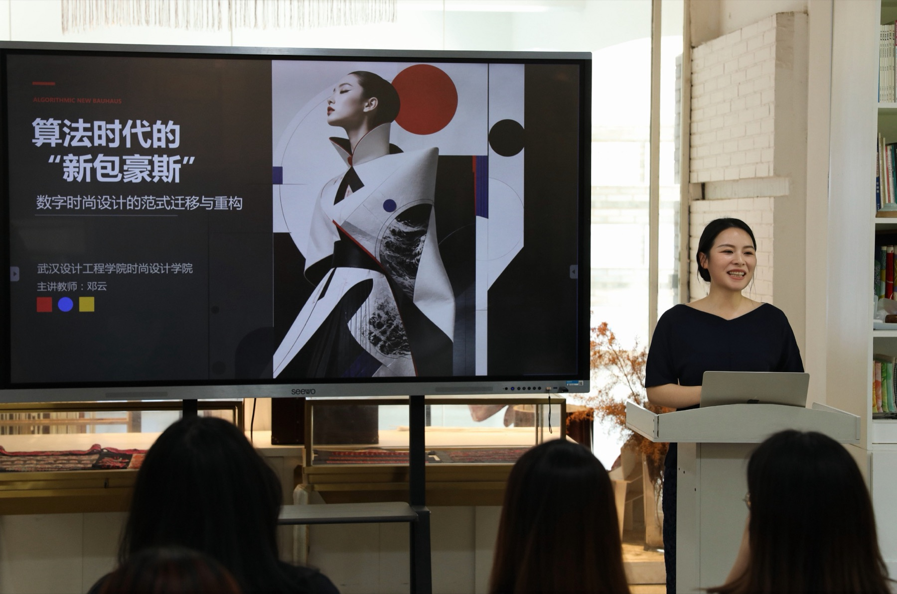
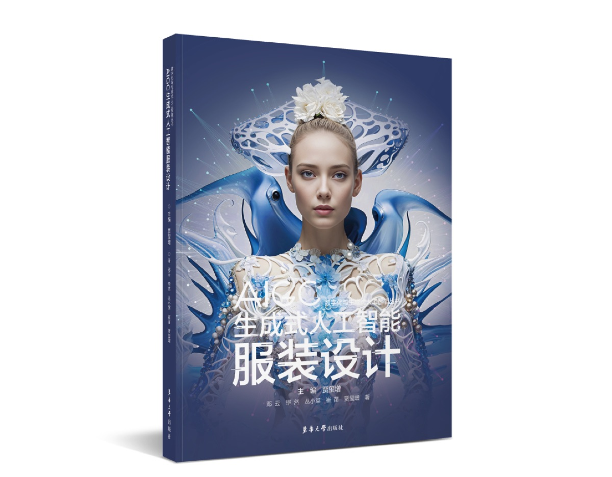
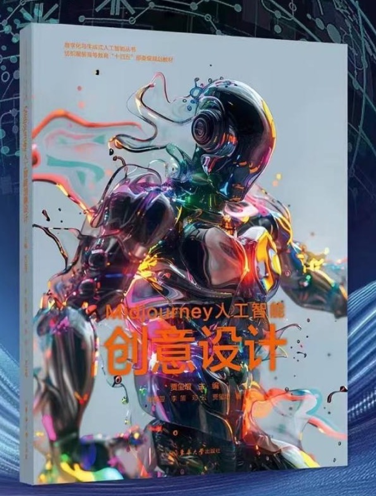
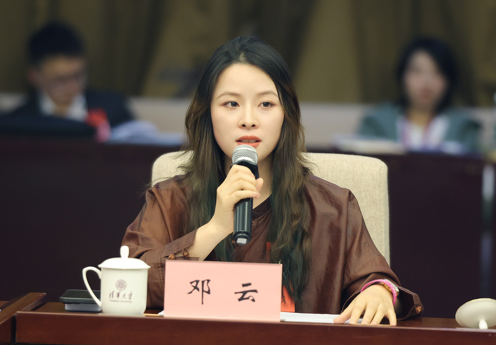

设计判断
结构、风格、系列与品牌匹配仍由人主导。

01 AI FASHION / BRAND / BUSINESS
从生成一张图，到重构一种工作方式。
连接设计、教育、品牌与真实商业结果。
邓云的工作位于设计、技术、教育与商业的交叉点。她不追逐每一个新工具，而是判断技术对行业究竟有什么用。
NOT ANOTHER AI TOOL REVIEWER.
A PRACTITIONER INSIDE FASHION.
结构、风格、系列与品牌匹配仍由人主导。
从漂亮图片进入研发、沟通与产品链路。
让中国文化形成可被当代世界识别的新表达。

A VERTICAL AI DESIGN SYSTEM
BUILT FOR FASHION
面料到服装视觉方案
从传统流程到协同工作流
减少低价值重复劳动
以上为学校与媒体公开报道中的特定案例结果，不构成普遍效果承诺。
真实的人、真实的课堂、真实的时尚现场，构成方法进入产业与教育的证据。



不是教“一键魔法”，而是建立兼顾技术效率、设计专业性与商业价值的生成式 AI 设计方法。

清华大学美术学院 · 从创意构想到高效生成
东华大学出版社 · 数字化与生成式人工智能系列讲座
第七届“清华会讲” · 人机共生与文艺创新
连接生成式人工智能、服装设计与专业教育。

纺织服装高等教育“十四五”部委级规划教材

完整出版信息待补充

毕业于清华大学美术学院，韩国安养大学艺术经营硕士，拥有法国 MOD’ART 与意大利设计实践经历。现任湖南工艺美术职业大学服装艺术设计学院教师。
与邓云合作 ↗COURSES / CONSULTING / SPEAKING / COLLABORATION
企业咨询 · 课程培训 · 演讲邀约
品牌项目 · 媒体采访 · 学术合作